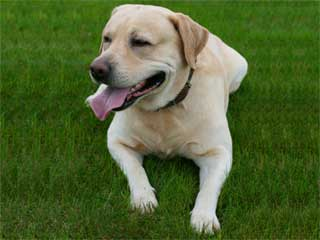

Labrador Retriever
They are the most commonly used breed for guide dogs. They are intelligent, easy to train, eager to please and have a gentle temperament.
- Average lifespan: 12-13 Years
- Average size: 25-36 kilograms
- Coat appearance: Short, dense, water-repellent
- Coloration: Black, yellow, chocolate
The Labrador Retriever, or just Labrador, is a type of retriever-gun dog. The Labrador is one of the most popular breeds of dog in Canada, the United Kingdom and the United States. They are very active, strongly built dogs with good bone and substance. Their tails are totally unique being 'otter' like and their movement is straight and true both front and back, covering the ground freely.